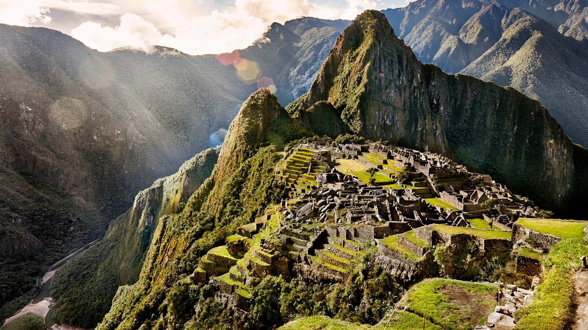

Las pirámides de Guiza
Las pirámides de Guiza, unas inmensas moles de piedra que, si bien han perdido gran parte del recubrimiento original de piedra caliza blanca y de los templos que las rodeaban, todos ellos en ruinas, todavía hoy en día continúan asombrando a quien las contempla. De hecho, constituyen uno de los logros arquitectónicos más impresionantes de la historia, y las técnicas de construcción que se emplearon para levantarlas continúan siendo en la actualidad tema de controversia. En realidad, en Egipto hay más de ochenta pirámides, construidas todas ellas en una amplia franja cronológica de unos mil años, pero son sin duda las de Guiza las de dimensiones más imponentes, así como las mejor conservadas gracias a la solidez de sus cimientos.
Machu Picchu
En lo alto de los Andes peruanos, la ciudadela de Machu Picchu parece suspendida en la niebla de las montañas. Precariamente erguida en un crestón rocoso con hondos precipicios a los lados, esta ciudad de una raza extinguida hace mucho fue descubierta apenas en el siglo XX, 400 años después de su caída. Encajonada entre las cumbres por encima del Urubamba, Machu Picchu resulta invisible para cualquiera que desconozca su ubicación.
El río Caño Cristales
El río Caño Cristales es un verdadero arcoíris fluvial. Se encuentra en medio de los Llanos orientales de Colombia, rodeado de una flora y una fauna exuberantes y extremadamente diversa (se estima que la biodiversidad ornitológica es la mayor del mundo), y nace al sur de la Sierra de la Macarena hasta desaparecer en el río Guayabero. Este río también se conoce como «El río que se escapó del Paraíso», pues más que agua, el río parece arrastrar sirope. Sirope de diferentes sabores. Concretamente, cinco sabores y cinco colores. Amarillo, azul, verde, negro y rojo.